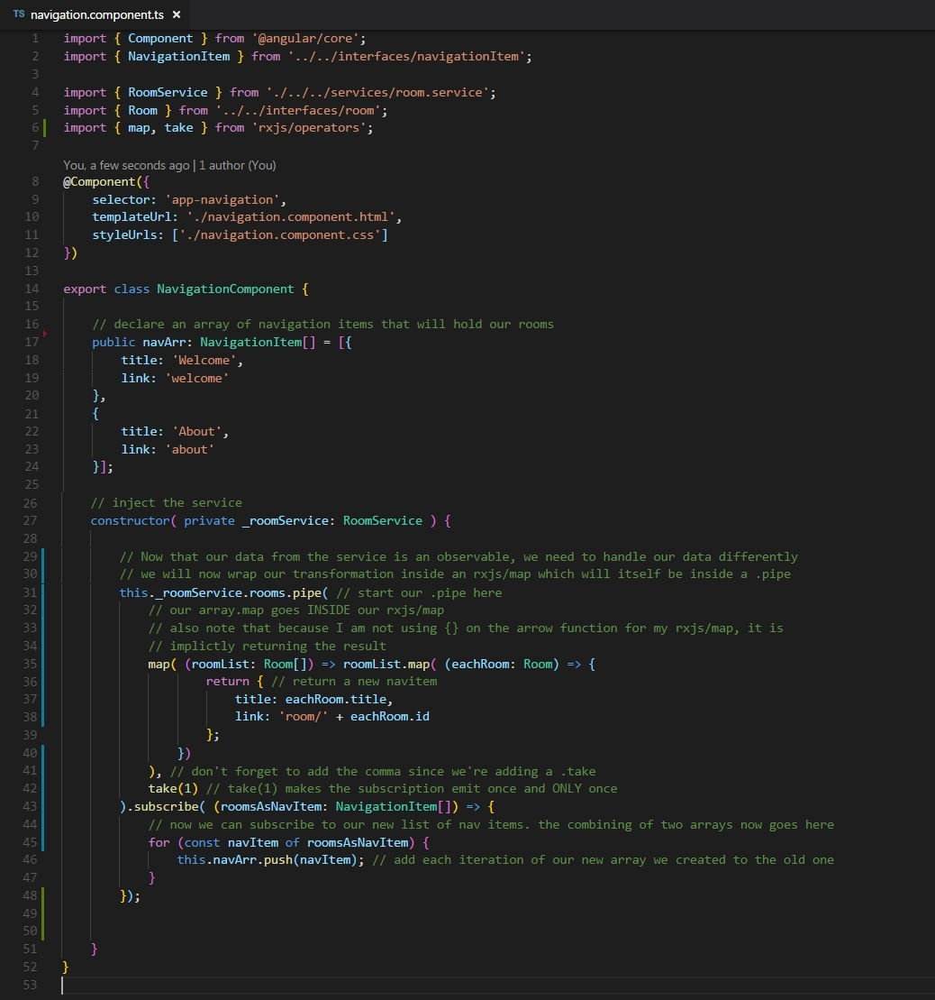
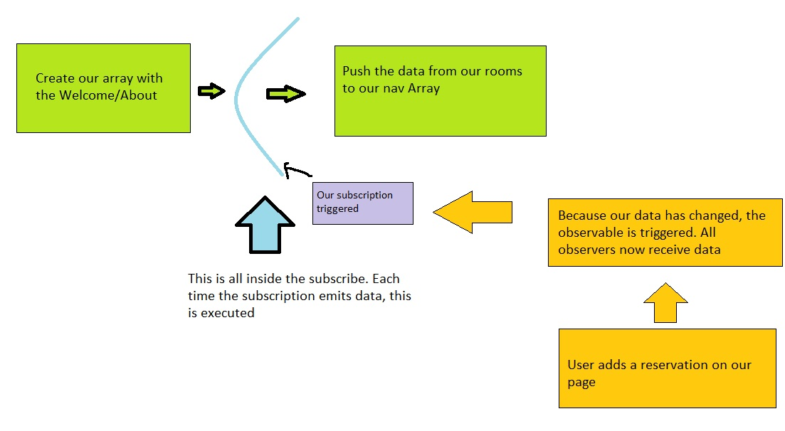
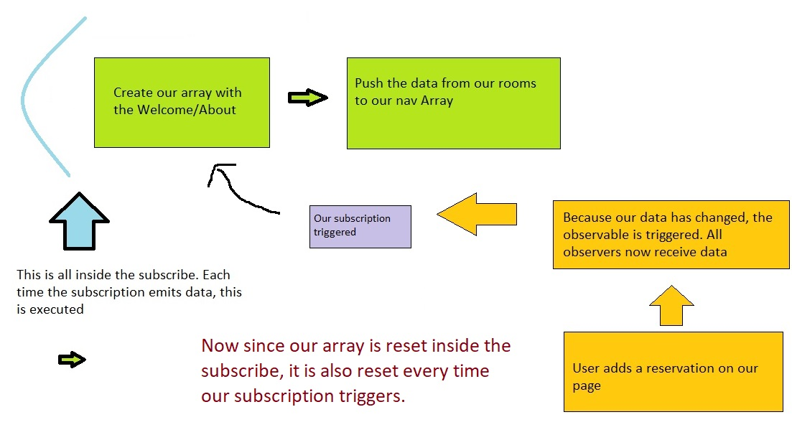
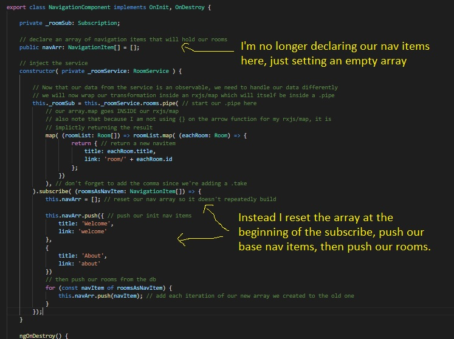

Our navbar has a problem: When we add a reservation it add the rooms to our navbar a second time. Rather than go back and edit the old lesson, I thought it would be a good idea if made this a bug fixing exercise.
Let's take a look at our nav bar back from lesson 22:
When the component fires up, we create the array with two items. Then we subscribe to our room observable and inside the subscription we push the results to our array.
But remember, the code inside the function in our subscribe executes every time the observable emits. And it's emitting any time there's a change in information.
Now we can stop that with rxjs/take. But we had to remove the take from this code because without it, the room list wouldn't update in real time. So that idea is out the window. Let's take a look at our flow.
Our initialization is happening outside of the subscribe, so maybe that's the problem? If we reset the array inside the subscription, that would delete our two static entries... buuuut...
What if we declared the value of our array as just the two static entries inside the subscribe instead of before it?
Ah-ha! So now, when a subscription is run, we assign it to hold the two nav items. And if the code in the subscription is ran a second, third, or fourth time, each time it will start with a full nav array and reset to hold just the two items. Excellent. Here's what our flow would look like:
And here's how I rewrote the nav-bar component:
